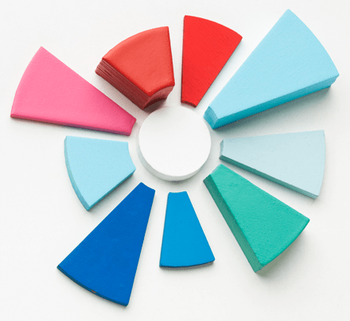

Как провести оценку
удовлетворенности персонала

Оценка удовлетворенности персонала – это барометр настроения сотрудников, способ выяснить отношение людей к условиям и содержанию работы, корпоративным стандартам и ценностям, а также к будущим изменениям.
Подобную оценку редко проводят ради праздного любопытства или «для галочки». Основная задача оценки удовлетворенности – помочь руководству компании понять ожидания своих работников, выявить организационные проблемы, которые отрицательно влияют на вовлеченность и лояльность персонала.
Результаты оценки удовлетворенности дают компании возможность создать подходящие условия для продуктивной работы сотрудников и повысить производительность труда
С 2012 года мы провели более 100 опросов удовлетворенности персонала для российских и международных компаний. Накопленный опыт позволил нам сделать несколько интересных наблюдений и выводов, которые помогут вам избежать распространенных ошибок при подготовке и проведении собственной оценки.
Оценка удовлетворенности персонала не ограничивается качественной подготовкой и проведением опроса
Разработка качественного опросника удовлетворенности - только часть важной работы. Результативность оценки зависит от нескольких дополнительных факторов:
-
Информированность и вовлеченность сотрудников;
-
Реалистичность сроков проведения опроса;
-
Наличие позитивных изменений по результатам оценки.
Активность участников опроса удовлетворенности напрямую коррелирует с их осведомленностью о целях и задачах исследования.
Если перед началом опроса в компании не проводятся подготовительные информационные мероприятия, коэффициент вовлеченности участников - менее 60%. То есть четверо из десяти сотрудников гарантированно проигнорируют опрос. Или 40 из 100.
Безусловно, можно в принудительном порядке заставить участников заполнить опросник, но искренность ответов и достоверность результатов в этом случае будут стремиться к нулю.
Благодаря правильно организованной информационной кампании активность участников опроса составляет не менее
85%.
Выборка получается более репрезентативной, а результаты исследования – достоверными.
Почему так происходит?
Всё довольно просто – отсутствие официальной и достоверной информации о предстоящем опросе приводит к возникновению у сотрудников тревожности и настороженности по отношению к исследованию.
Информационный вакуум вокруг опроса быстро заполняется всевозможными слухами и негативными прогнозами:
- «А если мои ответы вычислят?»
- «Какие последствия меня ждут?»
- «А вдруг меня уволят?»
- «Для чего вообще нужен этот опрос?»
Эти и подобные вопросы возникают у сотрудников, если организаторы опроса решили обойтись без подготовительной работы.
Недостаток информации об оценке сотрудники быстро заполняют домыслами и слухами
Грамотная информационная подготовка также способствует высокой искренности участников опроса.
В нашем опроснике есть блок открытых вопросов, которые предполагают свободный ответ сотрудника (в виде мнения, критики или пожелания). Открытые вопросы анонимны и не обязательны к заполнению, участник сам решает, готов ли он дополнить свои основные ответы. В то же время, сотрудники, которые получили необходимую информацию об исследовании, в 74% случаев оставляют ценные комментарии в опроснике. Это помогает дополнить выводы и рекомендации по результатам опроса, сделав их максимально полезными для заказчика.
Ключевые рекомендации:
- Уделите время информированию персонала о предстоящей оценке удовлетворенности;
- Расскажите людям о целях и задачах опроса, организуйте диалог, снимите опасения и тревогу;
- Сделайте информационные материалы наглядными, простыми и запоминающимися;
- Используйте различные каналы коммуникации – интернет-портал, корпоративные издания и доски объявлений, очные и онлайн-встречи, e-mail и звонки;
- Обязательно поработайте над информированием и вовлечением в опрос руководителей и неформальных лидеров. Заручитесь их поддержкой!
Нередко при организации опроса организаторы впадают в две крайности – слишком сжатые или слишком растянутые сроки его проведения. Оба варианты чреваты проблемами со сбором необходимого количества ответов. Из-за рабочей занятости участники или не успевают заполнить опросники, или откладывают «на потом» и благополучно забывают об этом.
Наш опыт подсказывает, что оптимальная продолжительность опроса удовлетворенности – 2 недели или 10 рабочих дней. За это время подавляющее большинство сотрудников успевает найти время для участия в исследовании.
При планировании сроков проведения опроса также важно учесть график отпусков участников, выбрав период, когда большинство сотрудников будет на рабочих местах. Также не рекомендуется планировать опрос накануне или сразу после праздничных дней.
Планируйте сроки проведения опроса с учетом загруженности участников
Ключевые рекомендации:
- Организуйте рассылку периодических напоминаний среди сотрудников о важности участия в опросе и сроках его проведения;
- Избегайте давления на сотрудников и не принуждайте к участию во что бы то ни стало. Помните: лучше получить несколько не заполненных опросников, чем заполненных искаженными данными;
- Будьте на связи. В процессе опроса у некоторых участников могут возникнуть вопросы или трудности, которые потребуется оперативно решить.
Правильно организованный опрос удовлетворенности создает у сотрудников определенные ожидания. И это совершенно логично. Поделившись своим мнением, замечаниями и предложениями, сотрудники ждут ответной реакции и действий со стороны руководства.
Самая серьезная ошибка, которая допускается по итогам опроса – отсутствие позитивных изменений. Формальная благодарность руководства участникам – явно не то, на что рассчитывают сотрудники, когда открыто делятся своим мнением. В данной ситуации важны конкретные действия.
Выявив проблемы, которые отрицательно влияют на удовлетворенность и лояльность сотрудников, необходимо сделать 3 вещи:
-
Признать наличие проблем;
-
Составить план по их решению;
-
Приступить к реализации плана.
К сожалению, часто активность руководства и HR заканчивается уже на первом пункте. В этой ситуации участники опроса получают четкий сигнал: «Ничего не изменилось. Не было смысла делиться своим мнением». Добиться вовлеченности и искренности сотрудников в следующем опросе теперь будет намного труднее.
Зачастую отсутствие позитивных изменений по итогам опроса объясняется заблуждением, что на решение проблем необходимы огромные усилия и неподъемный бюджет
На практике большинство негативных факторов и замечаний устраняются с помощью правильной настройки корпоративного управления.
Сделать систему оплаты труда более прозрачной и понятной сотрудникам, скорректировать программу обучения и развития персонала, чтобы она учитывала не только требования бизнеса, но и потребности сотрудников, установить четкие правила работы «карьерного лифта» в компании – эти и многие другие изменения требуют лишь профессионального подхода и слаженных действий управленческой команды для достижения ощутимых результатов.
Планирование и реализация изменений после опроса - главная задача руководства
Ключевые рекомендации:
- По результатам опроса тщательно рассчитайте свои силы по решению выявленных проблем. Оцените сроки, затраты и риски принимаемых решений. Избегайте поспешных выводов и громких обещаний;
- Расскажите сотрудникам о конкретных шагах и мероприятиях, которые будут предприняты по результатам оценки удовлетворенности;
- Информируйте персонал о достижениях, а также о возникающих проблемах по ходу выполнения плана изменений. Не все из намеченного может получиться, несмотря на расчеты. Это нормально. Открытость укрепляет доверие.
Автор материала: Беспалов Игорь Александрович ©
Мы всегда рады помочь, если у вас возникнут вопросы, связанные с подготовкой и проведением опроса удовлетворенности сотрудников!
Вы можете делегировать Smart Business Solutions рутинную, техническую и организационную работу, связанную с оценкой удовлетворенности. Вам останется лишь внимательно изучить результаты и рекомендации наших экспертов. Информативные отчеты и настраиваемые дашборды сделают этот процесс максимально простым и удобным.
Воспользуйтесь нашим онлайн-опросником удовлетворенности персонала, чтобы в короткие сроки провести качественную оценку.
Вы также можете воспользоваться нашими обучающими материалами при планировании изменений по результатам опроса:
наверх
наверх ▲